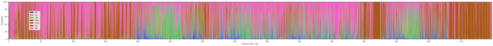

SSSM core example#
[ ]:
pip install sssm --upgrade
[53]:
import numpy as np
from sssm import ssm
import mne
import matplotlib.pyplot as plt
load data#
[37]:
raw = mne.io.read_raw_cnt(r"C:\Users\bkxcy\workspace\eeg_data_process\data\health\sleep\baoxiaoyu20211201s.cnt")
raw.load_data()
pre-process#
[37]:
raw = raw.filter(0.7,45)
data = (raw.resample(100).get_data(units="uV")).astype(np.float16)
Reading 0 ... 5604509 = 0.000 ... 22418.036 secs...
Filtering raw data in 1 contiguous segment
Setting up band-pass filter from 0.7 - 45 Hz
FIR filter parameters
---------------------
Designing a one-pass, zero-phase, non-causal bandpass filter:
- Windowed time-domain design (firwin) method
- Hamming window with 0.0194 passband ripple and 53 dB stopband attenuation
- Lower passband edge: 0.70
- Lower transition bandwidth: 0.70 Hz (-6 dB cutoff frequency: 0.35 Hz)
- Upper passband edge: 45.00 Hz
- Upper transition bandwidth: 11.25 Hz (-6 dB cutoff frequency: 50.62 Hz)
- Filter length: 1179 samples (4.716 s)
[Parallel(n_jobs=1)]: Using backend SequentialBackend with 1 concurrent workers.
[Parallel(n_jobs=1)]: Done 1 out of 1 | elapsed: 0.0s remaining: 0.0s
[Parallel(n_jobs=1)]: Done 2 out of 2 | elapsed: 0.1s remaining: 0.0s
[Parallel(n_jobs=1)]: Done 3 out of 3 | elapsed: 0.3s remaining: 0.0s
[Parallel(n_jobs=1)]: Done 4 out of 4 | elapsed: 0.4s remaining: 0.0s
[Parallel(n_jobs=1)]: Done 36 out of 36 | elapsed: 4.7s finished
predict plot#
[42]:
model = ssm.SSM()
ret = model.predict(data[17:18],step=300)
model.plot_predictions()
input 1 epoch(30s) data#
[138]:
# model = ssm.SSM(model_name='ckp_last.pt')
model = ssm.SSM()
epoch_id = 200
input_data = data[17:18,epoch_id*3000:(epoch_id+1)*3000]
plt.figure(figsize=(50,4))
plt.plot(input_data.T)
plt.xlim([0,3000])
plt.show()
ret = model.predict(input_data,step=1)
model.plot_predictions()
[135]:
model = ssm.SSM(model_name='ckp_last.pt')
# model = ssm.SSM()
epoch_id = 200
input_data = data[17:18,epoch_id*3000:(epoch_id+1)*3000]
plt.figure(figsize=(50,4))
plt.plot(input_data.T)
plt.xlim([0,3000])
plt.show()
ret = model.predict(input_data,step=1)
model.plot_predictions()

input full night data#
[139]:
model = ssm.SSM(model_name='ckp_last.pt')
ret = model.predict(data[17:18],step=300)
model.plot_predictions()

get results#
[140]:
df = model.to_pandas(event_threshold={
'Spindle': 0.8,
'Background': 0.8,
'Arousal': 0.8,
'K-complex': 0.8,
'Slow wave': 0.8,
'Vertex Sharp': 0.8,
'Sawtooth': 0.8})
df
[140]:
| Start | End | Duration | label | predict_proba | epoch_id | |
|---|---|---|---|---|---|---|
| 1 | 600 | 900 | 300 | Arousal | 0.996692 | 0 |
| 2 | 900 | 1800 | 900 | Background | 0.982475 | 0 |
| 4 | 2100 | 3300 | 1200 | Background | 0.956050 | 0 |
| 6 | 3600 | 4500 | 900 | Arousal | 0.982866 | 0 |
| 7 | 4500 | 4800 | 300 | Background | 0.995384 | 0 |
| ... | ... | ... | ... | ... | ... | ... |
| 3296 | 2234100 | 2234400 | 300 | Arousal | 0.998787 | 0 |
| 3297 | 2234400 | 2235900 | 1500 | Background | 0.955171 | 0 |
| 3298 | 2235900 | 2240700 | 4800 | Arousal | 0.974922 | 0 |
| 3299 | 2240700 | 2241300 | 600 | Background | 0.932963 | 0 |
| 3300 | 2241300 | 2241804 | 504 | Arousal | 0.951562 | 0 |
2266 rows × 6 columns
[141]:
spindles_df = df.loc[df.label=='Spindle'].reset_index(drop=True)
kc_df = df.loc[df.label=='K-complex'].reset_index(drop=True)
spindles_df = spindles_df.sort_values('predict_proba',ascending=False).reset_index(drop=True)
kc_df = kc_df.sort_values('predict_proba',ascending=False).reset_index(drop=True)
[142]:
spindles_df
[142]:
| Start | End | Duration | label | predict_proba | epoch_id | |
|---|---|---|---|---|---|---|
| 0 | 1168800 | 1169100 | 300 | Spindle | 0.999875 | 0 |
| 1 | 1933200 | 1933500 | 300 | Spindle | 0.999850 | 0 |
| 2 | 1992000 | 1992300 | 300 | Spindle | 0.999827 | 0 |
| 3 | 1007400 | 1007700 | 300 | Spindle | 0.999812 | 0 |
| 4 | 1062600 | 1062900 | 300 | Spindle | 0.999789 | 0 |
| ... | ... | ... | ... | ... | ... | ... |
| 248 | 1856400 | 1856700 | 300 | Spindle | 0.802168 | 0 |
| 249 | 1246200 | 1246500 | 300 | Spindle | 0.802033 | 0 |
| 250 | 1549200 | 1549500 | 300 | Spindle | 0.801724 | 0 |
| 251 | 860700 | 861000 | 300 | Spindle | 0.801277 | 0 |
| 252 | 1446000 | 1446600 | 600 | Spindle | 0.801162 | 0 |
253 rows × 6 columns
[143]:
kc_df
[143]:
| Start | End | Duration | label | predict_proba | epoch_id | |
|---|---|---|---|---|---|---|
| 0 | 891600 | 891900 | 300 | K-complex | 0.941446 | 0 |
| 1 | 695700 | 696000 | 300 | K-complex | 0.936204 | 0 |
| 2 | 1420200 | 1420500 | 300 | K-complex | 0.933121 | 0 |
| 3 | 957900 | 958200 | 300 | K-complex | 0.923686 | 0 |
| 4 | 1834500 | 1834800 | 300 | K-complex | 0.915197 | 0 |
| 5 | 797400 | 797700 | 300 | K-complex | 0.905449 | 0 |
| 6 | 814200 | 814500 | 300 | K-complex | 0.887404 | 0 |
| 7 | 1919400 | 1919700 | 300 | K-complex | 0.886306 | 0 |
| 8 | 735900 | 736200 | 300 | K-complex | 0.885708 | 0 |
| 9 | 1841400 | 1841700 | 300 | K-complex | 0.882073 | 0 |
| 10 | 665400 | 665700 | 300 | K-complex | 0.880695 | 0 |
| 11 | 719400 | 719700 | 300 | K-complex | 0.880499 | 0 |
| 12 | 1851300 | 1851600 | 300 | K-complex | 0.878774 | 0 |
| 13 | 1845000 | 1845300 | 300 | K-complex | 0.877886 | 0 |
| 14 | 684600 | 684900 | 300 | K-complex | 0.873030 | 0 |
| 15 | 1908300 | 1908600 | 300 | K-complex | 0.871325 | 0 |
| 16 | 963900 | 964200 | 300 | K-complex | 0.871283 | 0 |
| 17 | 1458900 | 1459200 | 300 | K-complex | 0.871187 | 0 |
| 18 | 644400 | 644700 | 300 | K-complex | 0.865622 | 0 |
| 19 | 786300 | 786600 | 300 | K-complex | 0.856225 | 0 |
| 20 | 1802100 | 1802400 | 300 | K-complex | 0.854385 | 0 |
| 21 | 874800 | 875100 | 300 | K-complex | 0.853656 | 0 |
| 22 | 735300 | 735600 | 300 | K-complex | 0.843922 | 0 |
| 23 | 783900 | 784200 | 300 | K-complex | 0.842278 | 0 |
| 24 | 1133700 | 1134000 | 300 | K-complex | 0.836957 | 0 |
| 25 | 1793100 | 1793400 | 300 | K-complex | 0.836822 | 0 |
| 26 | 671700 | 672000 | 300 | K-complex | 0.829499 | 0 |
| 27 | 669000 | 669300 | 300 | K-complex | 0.826817 | 0 |
| 28 | 1126800 | 1127100 | 300 | K-complex | 0.825165 | 0 |
| 29 | 842100 | 842400 | 300 | K-complex | 0.824742 | 0 |
| 30 | 687600 | 687900 | 300 | K-complex | 0.822328 | 0 |
| 31 | 1243200 | 1243500 | 300 | K-complex | 0.819598 | 0 |
| 32 | 1305300 | 1305600 | 300 | K-complex | 0.818472 | 0 |
| 33 | 816000 | 816300 | 300 | K-complex | 0.804663 | 0 |
| 34 | 633000 | 633300 | 300 | K-complex | 0.802887 | 0 |
get predicted data#
[144]:
_id = 0
plt.plot(data[17,spindles_df.loc[_id].Start:spindles_df.loc[_id].End])
[144]:
[<matplotlib.lines.Line2D at 0x18ce10fbb80>]
[145]:
_id = 0
plt.plot(data[17,kc_df.loc[_id].Start:kc_df.loc[_id].End])
[145]:
[<matplotlib.lines.Line2D at 0x18ce1462760>]
get feature#
[146]:
feature = model.feature.cpu().numpy()
feature.shape # n_epoch, n_sample, m,n
[146]:
(1, 7472, 128, 15)
[148]:
feature = feature[0].reshape(feature.shape[1],-1)
feature.shape# n_sample, n_feature
[148]:
(7472, 1920)
[149]:
# from sklearn.decomposition import PCA
from sklearn.manifold import TSNE as PCA
import pandas as pd
import seaborn as sns
pca = PCA(n_components=2, random_state=0)
[150]:
transformed_feature = pca.fit_transform(X=feature)
C:\Users\bkxcy\anaconda3\envs\torch_cuda\lib\site-packages\sklearn\manifold\_t_sne.py:795: FutureWarning: The default initialization in TSNE will change from 'random' to 'pca' in 1.2.
warnings.warn(
C:\Users\bkxcy\anaconda3\envs\torch_cuda\lib\site-packages\sklearn\manifold\_t_sne.py:805: FutureWarning: The default learning rate in TSNE will change from 200.0 to 'auto' in 1.2.
warnings.warn(
[151]:
x_component, y_component = transformed_feature[:, 0], transformed_feature[:, 1]
feature_df = pd.DataFrame({
'x':transformed_feature[:, 0],
'y':transformed_feature[:, 1],
'Event Type':[['SS','KC','SW','SAW','VSW','BG','MA'][i] for i in ret],
})
[152]:
# Plot our dimensionality-reduced (via PCA) dataset.
plt.figure(figsize=(10, 10), dpi=100)
# plt.scatter(x=x_component, y=y_component, c=test['labels'], cmap='tab20', s=5, alpha=8/10)
sns.scatterplot(data=feature_df,x='x',y='y',hue='Event Type',palette='bright',s=10,alpha=0.8)
plt.title('Sleep evtets classe map')
plt.legend(markerscale=1)
# plt.legend(['Spindle','K-complex','Slow-wave','Sawtooth','Vertex Sharp','Background','Arousal'])
# plt.legend()
plt.show()